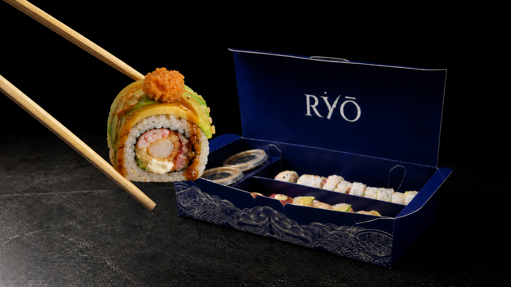
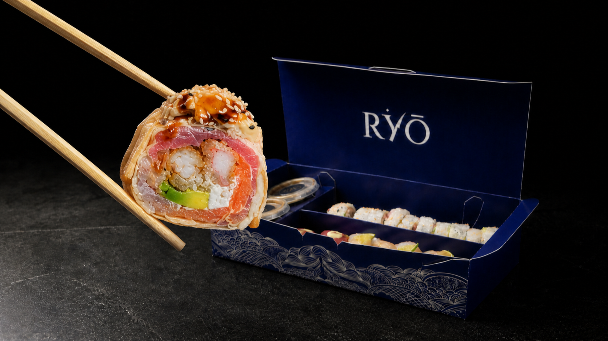

Galería editorial
La fotografía funciona como portada. Debajo aparecen categoría, selector por nombre y ficha completa. Es el camino más claro para conservar deseo y consulta rápida.

Recomendación: base más sólida para el menú final; conserva el lenguaje actual y corrige jerarquía y proporción.
Índice de carta
La categoría se vuelve capítulo. Después de la imagen, Rolls especiales y Nigiris ocupan bloques numerados; los platos se leen como índice editorial.

Rolls especiales
Selección de autor
Nigiris
Dos piezas por selección
Kamasutra
Índice encajado
La categoría nace dentro de la fotografía. En escritorio la carta activa sube sobre el borde visual y conduce hacia ingredientes. En tablet y teléfono se convierte en una retícula de cartas expandibles.
Rolls especiales
Selección de autor
Nigiris
Dos piezas por selección
Kamasutra
Envuelto en papel de soya, relleno de tuna, salmón, pescado blanco, camarón y kani crujiente con queso crema y aguacate, coronado con gratinado de pesca blanca crujiente.
Lectura de tu referencia: el bloque activo se desplaza hacia arriba; la fotografía no cambia de sitio y sigue siendo el plano dominante.
Mesa + acercamiento
Una imagen amplia y un recorte macro del mismo plato. El bloque visual revela textura y topping antes de presentar una navegación compacta por categoría.